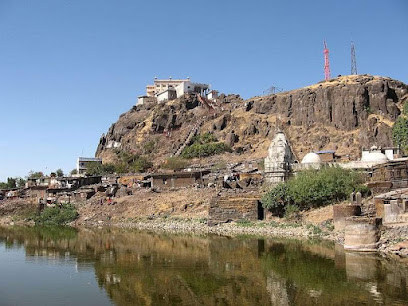
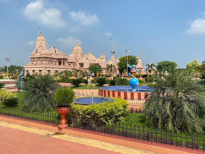

Laxmi Vilas Palace
The Laxmi Vilas Palace, built in 1890, is one of the largest palaces in India and showcases an exquisite blend of Indo-Saracenic architecture. The palace is the residence of the Maratha royal family and features stunning gardens, ornate interiors, and a museum that displays royal artifacts.

Statue of Unity
The Statue of Unity, standing at 182 meters, is the tallest statue in the world and is a tribute to Sardar Vallabhbhai Patel, the Iron Man of India. It is located near the Sardar Sarovar Dam and offers stunning views of the surrounding areas.

Pavagadh
Pavagadh is a UNESCO World Heritage Site and an important pilgrimage spot, home to the Kalika Mata Temple. The hilltop offers panoramic views, and visitors can take a cable car ride to reach the summit.
Poicha
Poicha, located in the Narmada district of Gujarat, India, is home to the Nilkanth Dham Swaminarayan Temple, a Hindu temple and spiritual-cultural campus. The temple is also known as Nilkanthdham Poicha or Poicha Swaminarayan Mandir.
Sayaji Garden
Sayaji Garden is a sprawling park in Vadodara that features a variety of flora and fauna. Established in the early 20th century, the garden also houses a zoo, a toy train, and several beautiful fountains, making it an ideal spot for family outings and picnics.

Baroda Museum and Picture Gallery
Established in 1894, the Baroda Museum and Picture Gallery houses a rich collection of art and artifacts, including paintings, sculptures, and historical relics. The museum is a treasure trove for art lovers and offers insights into the cultural heritage of Vadodara.

EME Temple
The EME Temple, also known as the Dakshinamurthy Temple, is a unique temple dedicated to Lord Shiva and is built in the shape of a fighter jet. Located on the grounds of the Indian Air Force, the temple is a popular spiritual site and showcases modern architecture.

Narmada Canal
The Narmada Canal is a picturesque waterway that runs through Vadodara, offering scenic views and a tranquil environment. It's a great spot for walks and cycling, providing a perfect escape from the hustle and bustle of city life.

Maharaja Fateh Singh Museum
The Maharaja Fateh Singh Museum is housed in the former royal palace and showcases a vast collection of art, including paintings by renowned artists and valuable artifacts from the royal family's collection.